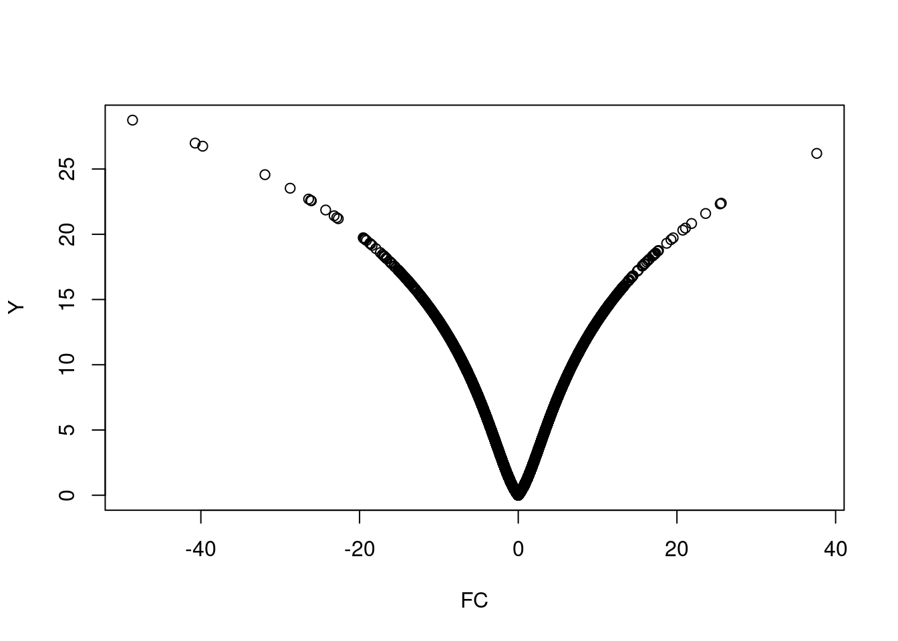

Como hemos visto en la sección anterior dos medidas naturales para la selección de genes son el promedio de “log-ratios”, o la diferencia de promedios en el caso de muestras independientes, o el valor del estadístico de test (\(t\)-test) de una o dos muestras según si se trata de muestras apareadas o independientes respectivamente. Los primeros estudios de microarrays eran muy costosos y se hacían con pocas o incluso ninguna réplica por condición experimental. En estas situaciones la única forma fiable de detectar una diferencia de expresión era a traves del “log-ratio” o su diferencias.
Rápidamente se puso en evidencia que para poder obtener los genes que estaban realmente diferencialmente expresados era preciso disponer de un soporte estadístico que permitiera tener en cuenta la variación aleatoria existente entre muestras.
En la práctica esto se reduce a afirmar que si, además de la diferencia de expresión entre las condiciones experimentales, se lleva a cabo un test estadístico dispondremos de una medida objetiva, el p–valor que nos servirá para decidir qué genes se declaran diferencialmente expresados, a saber, aquellos en los que el p–valor del test sea inferior a un cierto umbral como 0.05 o 0.01.
Como es sabido, un test estadístico procede decidiendo rechazar la hipótesis nula si el p–valor es más pequeño que el nivel de significación del test.
Siguiendo con el ejemplo anterior podemos ordenar los resultados de los tests en base a los p–valores:
## statistic dm p.value
## 1449383_at -48.61014 -2.044928 3.276616e-13
## 1451421_a_at -40.72173 -1.445182 1.909283e-12
## 1415929_at -39.77036 -0.812879 2.415238e-12
## 1450826_a_at 37.62239 5.147992 4.193941e-12
## 1448303_at -31.92365 -2.283765 2.140612e-11Ahora podríamos seleccionar, por ejemplo los genes cuyo p–valor fuera inferior a 0.01
Esto deja un total de {r} dim(selectedTeststat)[1] con un p–valor inferior a 0.01
Si se opta por computar los valores de significación (p–valores) de los genes, resulta interesante comparar el tamaño del cambio del nivel de significación estadístico. El “volcano plot” es una representación gráfica que permite ordenar los genes a lo largo de dos dimensiones, la biológica, representada por el “fold change” y la estadística representada por el logaritmo negativo del p–valor.
En la escala horizontal se representa el cambio entre los dos grupos (en escala logarítmica, de manera que la regulación positiva o negativa se representa de forma simétrica). En la escala vertical se representa el p–valor del test en una escala logarítmica negativa, de forma que los p–valores más pequeños aparecen mayores.
Así pues puede considerarse que el primer eje indica impacto biológico del cambio (a más efecto biológico mayor “fold-change”) y el segundo muestra la evidencia estadística, o la fiabilidad del cambio.
Como veremos más adelante en esta sección, el paquete limma permite realizar volcano-plots de forma sencilla a partir de los resultados de un anàlisis, pero para hacer un volcano plot tan sólo se necesita una lista de p-valores y los efectos (“fold-change”) asociados.
La figura (???)(fig:volcano0) muestra un “volcano-plot” para este ejemplo de los “celltypes” para la comparación “LPS” frente a “Medium”.

También podemos adaptar alguna función “ad-hoc” como la siguiente, tomada de :
library(ggrepel)
# plot adding up all layers we have seen so far
volcanoP<- function (de,log2FoldChange, pvalue,
diffexpressed=NULL, col=NULL, delabel=NULL){
ggplot(data=de, aes(x=log2FoldChange, y=-log10(pvalue), col=diffexpressed, label=delabel)) +
geom_point() +
theme_minimal() +
geom_text_repel() +
scale_color_manual(values=c("blue", "black", "red")) +
geom_vline(xintercept=c(-0.6, 0.6), col="red") +
geom_hline(yintercept=-log10(0.05), col="red")
}
diffexpressed <- ifelse(abs(teststat$statistic)>10, TRUE, FALSE)
label <- rep(NA, length(diffexpressed))
label[diffexpressed] <- rownames(teststat)[diffexpressed]
volcanoP (de=teststat, log2FoldChange=teststat$statistic, pvalue=teststat$p.value,
diffexpressed = diffexpressed, delabel = label)Tal como se ha indicado más arriba, para realizar un buen test suele controlarse la probabilidad de error de tipo I (de falsos positivos) y buscar, de entre los tests candidatos, aquellos que tengan una menor probabilidad de error de tipo II, o equivalentemente una mayor potencia. A partir de este planteamiento existe, en el contexto estadístico estándar, multitud de formas de determinar cual debe ser el tamaño muestral necesario para obtener una potencia dada fijados el tamaño de efecto (“fold-change”) y la probabilidad de error de tipo I.
En el caso de los microarrays se han desarrollado diversas fórmulas para realizar cálculos de este tipo, pero la compleja estructura de los datos microarrays hace que sean relativamente discutibles.
Simon (Simon et al. (2003)) sugiere la fórmula siguiente que es una generalización de las fórmulas clásicas para problemas de dos muestras:
El tamaño total requerido para detectar genes diferencialmente expresados en al menos una diferencia \(\delta\) con una probabilidad de error de tipo I (FP), \(\alpha\) y una probabilidad de error de tipo II (FN) \(1-\beta\) se calcula: \[ n=\frac{4(z_{\alpha/2}+z_\beta)^2}{(\delta/\sigma)^2}, \] donde \(z_\alpha\) y \(z_\beta\) son los percentiles 100\(\alpha/2\) y 100\(\beta\) de la distribución Normal \(N(0,1)\) y \(\sigma\) es la desviación estandar de un gen dentro de una clase (de un grupo). Obviamente \(\sigma\) es siempre desconocida por lo que, sin una muestra piloto con que estimarla el calculo e más imaginativo que realista.
Además de esto, el número de arrays usualmente recomendado queda lejos de la cantidad asequible para la mayor parte de los experimentos (Lee and Whitmore (2002),Tibshirani (2006)). Lo que muchos usuarios hacen a la práctica, es buscar un equilibrio entre los costes y la reproducibilidad y, de hecho, tienden a usar una cantidad fija de arrays tal como 3 o 5 sin consideraciones adicionales.
Por ejemplo si ponemos \(\alpha=0.001\), \(1-\beta=0.95\), \(\delta=1\) y estimamos \(\sigma\) entre todas las muestras el número de réplicas biológicas que necesitaremos será de 35.8.